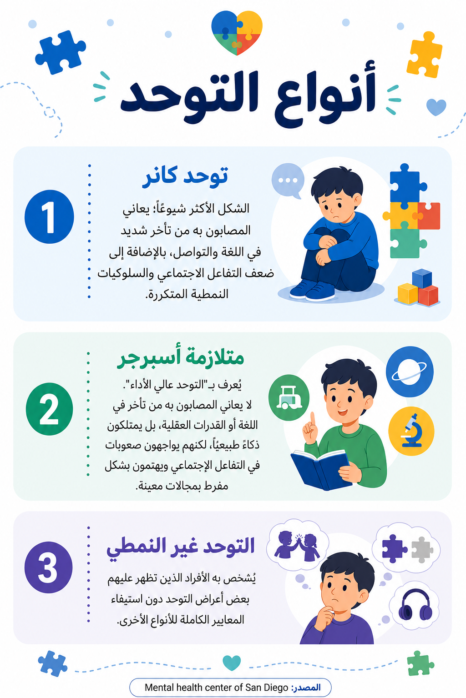
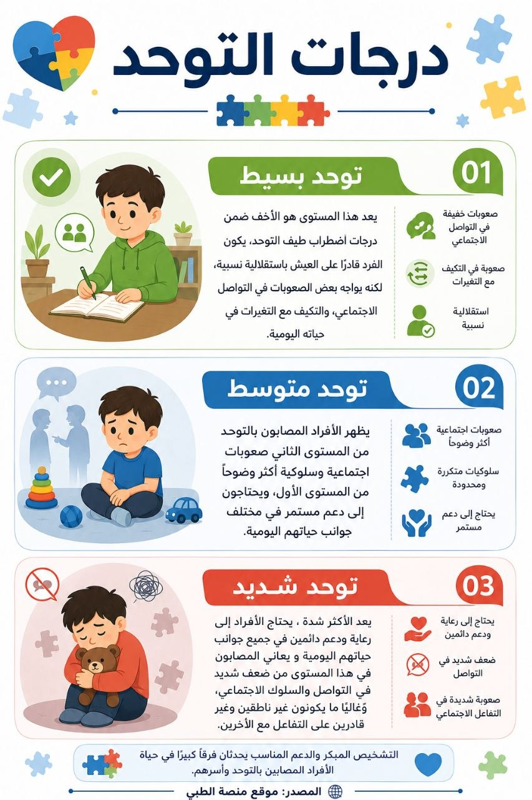
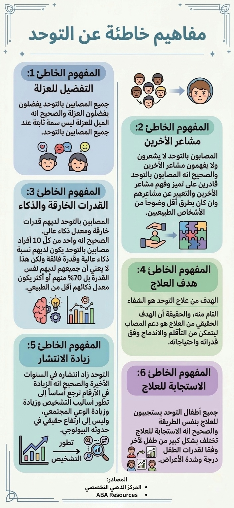

أنواع التوحد

درجات التوحد

مفاهيم خاطئة عن التوحد

معدل انتشار اضطراب طيف التوحد في ليبيا مقارنة بدول عربية أخرى

عوامل تؤثر على دقة الإحصائيات في ليبيا

خمسة إنفوجرافات لتبسيط أنواع ودرجات التوحد، تصحيح المفاهيم الخاطئة الشائعة، وعرض الأرقام والعوامل المؤثرة على دقة الإحصائيات في ليبيا.


